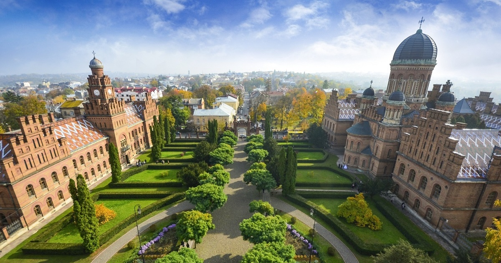

1 / 3

Ukrán gyártmányú An-225. A világ legnagyobb repülőgépe, mind méreteiben mind maximális felszálló tömegéve ami 640 tonna
2 / 3

Caption Two
3 / 3
Caption Three
Oroszország után Európa második legnagyobb területű állama. Ukrajna 1991-ig a Szovjetunió tagállama volt.
Fővárosa és egyben legnépesebb városa Kijev. Nagyobb városai még Harkiv, Odessza, Dnyipro, Doneck,
Az ország növényvilága változatos, 25 ezer vadon növő és több mint 400 kultúrnövény fajjal. A természetes növényzet csaknem 19 millió hektáron maradt meg. A főbb élőhelytípusok az erdők, erdős sztyeppek, sztyeppek, rétek és mocsarak. A folyókban, a tavakban és a tengerekben vízi növények élnek.
Forrás
Készítette: Dezidor - Saját készítésű fotó, CC BY 3.0, https://commons.wikimedia.org/w/index.php?curid=3101227